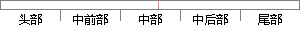

在这种结构下，应用分为浏览器端和服务端两部分。
片段位置图

相似结果|
相似片段 1：学位论文3．3．1用户功能模块设计用户功能模块分为两部分：表示层和服务器端。根据具体需求业务和要求，可以是B／S结构，也可以是C／S结构。在Web应用系统中，用户端实际就是一个标准的浏览器，服务端
相似片段 2：在系统实现架构上分为客户端平台和服务端平台两部分见图2。图2应用认证与访问控制系统实现架构客户端平台：客户端业务模块作为应用客户端(包括浏览器)的代理，与服务端业务模块交互建立加密连接。客户端硬件
相似片段 3： 安全代理分为客户端和服务端两部分，分别置于浏览器和 Web 服务器的前端。基于这种模式的 www访问过程要经过多个连接与转发阶段，以保障客户机和服务器间的通信安全。SSL 通信安全代理可以为浏览器
|
※ 片段修改建议 ※
近似词参考：- 这种：这类
- 结构：布局 构造
- 应用：利用 运用
系统自动生成语句：在这类布局下，利用分为浏览器端和服务端两部分。
注：本片段修改建议为系统自动生成，仅供参考。